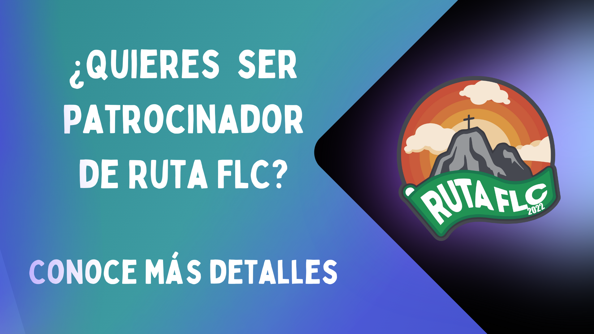

La Fraternidad de Líderes Cristianos es un grupo de jóvenes de entre 8 y 18 años, nuestro objetivo príncipal es “La formación integral de líderes cristianos bajo la acción propagadora del Espíritu Santo uniendo así nuestros corazones con el de Cristo”.
La formación de líderes cristianos en el FLC se desarrolla bajo 5 aspectos, que han sido considerados los más importantes en el desarrollo del los adolescentes: Espiritual, Psicosocial, Técnico, Cultural y Físico.
Es un evento creado con el objetivo principal de reunir a todos los integrantes de la Fraternidad de Líderes Cristianos (Miembros activos de Enlace, Misión, Alianza, Exmiembros, Papás y Amigos), fomentando la convivencia entre los tres grupos hermanos que conforman esta fraternidad.
Así mismo, paso con paso y hombro a hombro conquistarnos como líderes y fortaleciendo nuestros 5 aspectos en nuestro trayecto a Cristo Rey.